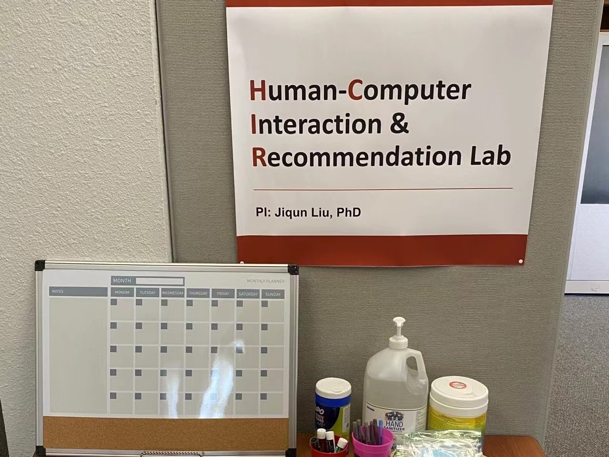
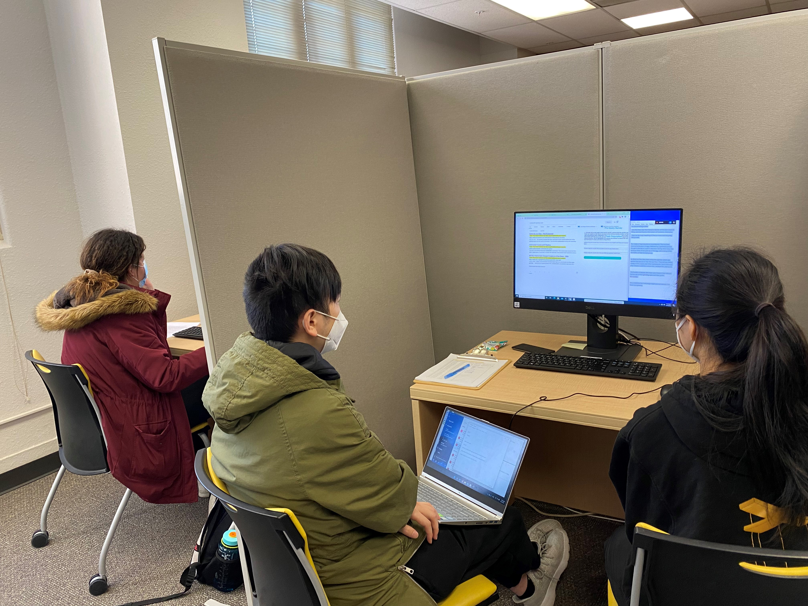
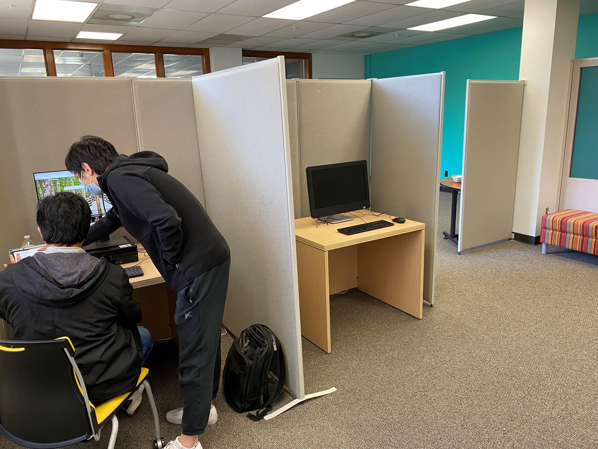

<div class="row">
<div class="12u(mobile) important(mobile)">
	<h2>HCIR Lab at OU SLIS</h2>
	<a name="Intro"></a><h4>Physical Lab Space</h4>
	<div class="row">
	<div class="4u 12u"><div class="image rowed"></div></div>
	<div class="4u 12u"><div class="image rowed"></div></div>
	<div class="4u 12u"><div class="image rowed"></div></div>
</div>
	<a name="Intro"></a><h4>Lab Introduction</h4>
	<p>
		PI Liu and project team build a new Human-Computer Interaction and Recommendation (HCIR) lab, with a physical space at the Bizzell Memorial Library (School of Library and Information Studies), for running user study sessions and facilitating in-person group meetings among team members. The lab has two desktop computers (one for the participant, one for the observer/researcher, with a panel dividing the two separate workplaces), with the data collection and experimental systems installed. The lab also provides a separate area for small-group meeting, consent and instruction form preparation, and participants who are waiting for their sessions. To protect participants under the COVID pandemic, the lab also offers personal protective supplies, including medical masks and hand sanitizers. Beyond the scope of this project, we expect to use the lab for supporting future user studies in evaluating IR and recommender systems and also for facilitating students’ learning and training about the procedure and tools related to user studies. 
	</p>
</div>
</div>